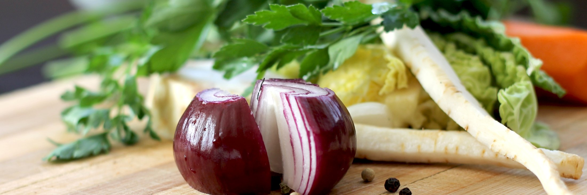

Cocina casera · Villarrica
¿Qué hay
hoy de menú?
La pregunta que en esta casa contestan veinte veces al día por teléfono. Acá va escrita, y se cambia todas las mañanas en un minuto.
- 516reseñas en Google (09-09-2026)
- 7fotos suyas ya publicadas en su ficha
- 1minuto para cambiar el menú de mañana
- 0páginas donde ese menú aparezca hoy

Se cambia cada mañana
El menú de hoy
Es la única pregunta que hace todo el mundo antes de venir, y la única que hoy hay que contestar por teléfono, plato por plato, veinte veces entre las once y la una. Escrita acá arriba se contesta sola.
Lunes 30 de agosto
- Cazuela de vacunofalta
- Pollo arvejado con arrozfalta
- Charquicán con huevofalta
- Merluza frita con ensaladafalta
El menú incluye falta: confirmar si trae entrada, postre o bebida. Se sirve hasta las falta: hora o hasta que se acabe, que es lo que suele pasar.
Los cuatro platos de arriba son de ejemplo: están puestos para que se vea la forma. El día que la casa escriba los suyos, esta sección es la página entera.

Lo de hoy se decide en la mañana. Escribirlo cuesta un minuto.
Todos los días
La carta de siempre
Lo que hay aunque el menú del día se haya acabado.
Para partir
- Empanada de pinofalta
- Sopaipillasfalta
- Ensalada chilenafalta
De fondo
- Lomo a lo pobrefalta
- Pollo asado con papasfalta
- Costillarfalta
- Pescado del díafalta
Para terminar
- Leche asadafalta
- Mote con huesillofalta
No hay ni un precio en toda esta página, y va a propósito: publicar uno equivocado molesta más que no publicarlo. Cada «falta» es una casilla que se llena en una conversación de cinco minutos.

La foto que decide en la vereda
La terraza larga, con las mesas de madera
En Villarrica en enero, quien busca dónde almorzar decide caminando y en diez segundos. Esta terraza cubierta, con las mesas puestas y la sombra, contesta las tres preguntas de esos diez segundos: si está abierto, si hay lugar y si es para uno. Es de ellos, está en su ficha, y no aparece en ninguna otra parte.

El menú del día se cambia en un minuto
Y ahorra veinte llamadas antes de las doce

Quién cocina
La casera
Quinientas dieciséis personas se tomaron el trabajo de escribir una reseña. Eso no pasa por la decoración: pasa porque alguien cocina como en la casa y atiende como si uno fuera conocido.
Esa historia existe y no está escrita en ninguna parte. Es la parte de la página que ninguna cadena puede copiar, y la única que no se puede encargar a un banco de imágenes.


Todo lo que se come acá es de ellos
Siete fotos de esta página son suyas, de su ficha de Google. Sólo la olla de la portada, el aura, el tajo y la pizarra de la cita son de banco libre — y ninguna es un plato servido, a propósito. Está todo declarado en imagenes/FUENTES.txt.


falta: el menú de hoy escrito, que es lo único que la página no puede inventar
La misma serie, más de cerca
Estas seis ya aparecen más arriba en la página. Vuelven acá en otro tamaño porque una sola pasada de imágenes deja el scroll vacío, y porque de cerca se ven cosas que en grande se pierden. La procedencia de cada una está en imagenes/FUENTES.txt.


Los datos de la casa
Reservar mesa para hoy
Cuatro casillas y la página queda terminada. Ninguna se inventa acá: las cuatro las contesta la casa en cinco minutos.
- Quién está a cargo
- falta: nombre
- Desde cuándo
- falta: año
- Dirección
- falta
- Horario
- falta
- falta: el número
Arme el mensaje acá
Diga cuántos son y a qué hora: el mensaje se arma solo y se lee antes de mandarlo. Esta página no envía nada a ningún servidor.

Para la dueña
Lo que está verificado
Las 516 reseñas de su ficha de Google, sus siete fotos, y que no tiene página web ni teléfono publicado. Mirado el 09-09-2026.
Lo que es de ejemplo
El menú del día y la carta: son platos de cocina casera puestos para mostrar la forma. Los reemplaza usted con los suyos.
Lo que falta
El número, la dirección, el horario y los precios. Y su nombre: con esa cantidad de reseñas, la historia de quién cocina vale más que cualquier foto.